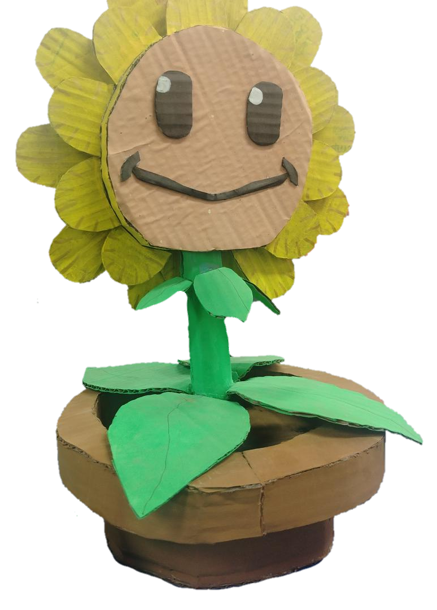
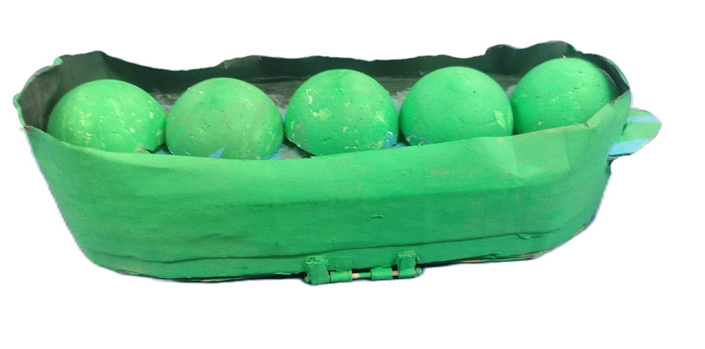

AgroNode Central
Nodo Principal Inteligente
- Cerebro con tecnología ESP32 nativa
- Sensor de humedad de suelo local de precisión
- Módulo DHT11 de temperatura/humedad ambiente
- Transmisión directa por Wi-Fi hacia tu aplicación Java

Satélite Diferencial
Extensión Multipunto Cableada
- Conexión física simplificada mediante bus analógico
- Lectura remota de humedad de suelo y temperatura aérea
- Expansión escalable usando las GPIO libres del nodo central
- Económico: no requiere comprar microcontroladores extra
Sensores Especializados
Complementos de Diagnóstico
- Soporte para sensores de calidad de aire (MQ-135)
- Integración de sensores de luz (LDR) para dosel de hojas
- Sondas térmicas de suelo a prueba de agua (DS18B20)
- Compatibilidad nativa con la app de The Green Peaks